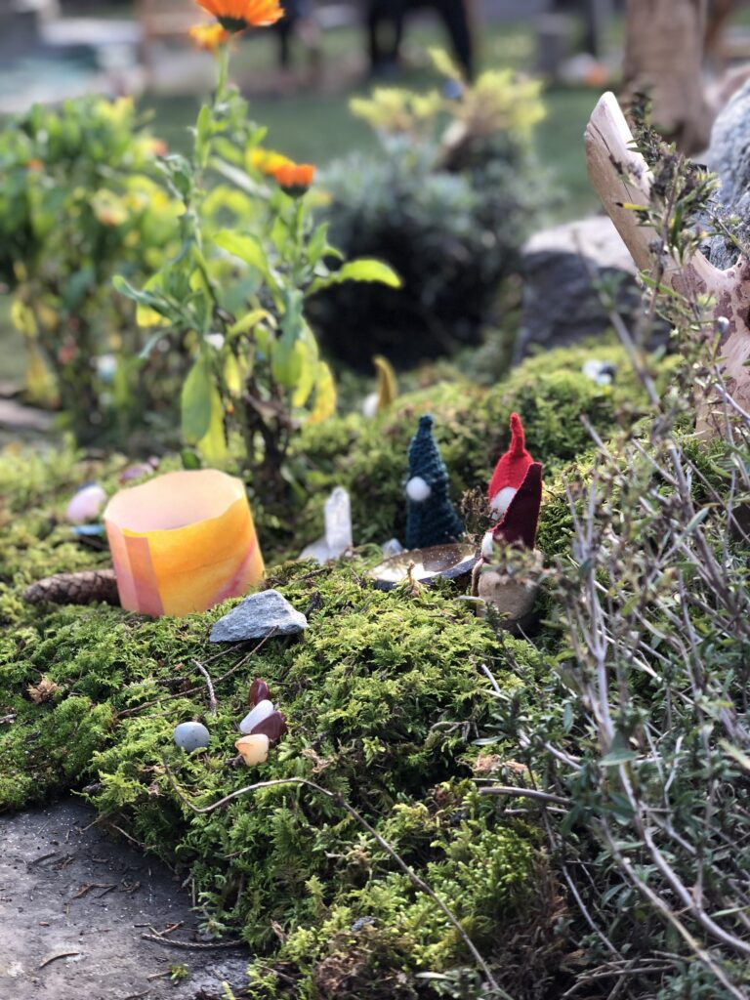

Hier wird noch richtig gespielt.
Seit 1985 in Baindt: zwei Gruppen, ein großer Garten am Naturschutzgebiet und ein Tag mit Rhythmus – für Kinder ab dem 2. Lebensjahr bis zum Schuleintritt.

Vier Farben, aus denen unser Tag gemacht ist.
Rhythmus
Wiederkehrende Tages-, Wochen- und Jahresläufe geben Halt und Orientierung.
Freies Spiel
Tücher, Holz, Wolle – wenig Spielzeug, viel Raum für Fantasie, drinnen wie draußen.
Natur
Unser Südgarten grenzt an eine große Wiese und das Naturschutzgebiet Kiesgrube.
Gemeinschaft
Eltern, Kinder und Team gestalten den Kindergarten gemeinsam.


Unser Jahreskreis
Zahlreiche Feste begleiten uns durch das Jahr. Im {{cur.name}} feiern wir:

Zum Jahresplan mit allen Terminen →Neu an der Pinnwand
Alle Berichte →
SOMMER · JUNI 2026
Johannifest
Am längsten Tag des Jahres feierten Kinder, Eltern, Geschwister und Großeltern unser Sommer- und Johannifest.
Bericht lesen →
FRÜHLING · 2026
Frühlingsmarkt
Mit Saxophonen, Geigen und einem Kanon öffnete der Kindergarten seine Türen zum traditionellen Frühlingsmarkt.
Bericht lesen →
WINTER · JANUAR 2026
Dreikönigsspiel
Die Kinder der Schneeweißchen-Gruppe zeigten ihr Dreikönigsspiel vor großem Publikum im Gruppenraum.
Bericht lesen →
Gesucht!
Menschen mit Herz für Kinder